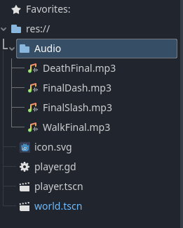

The True Monster
Story/Introdcution
Our game you play as a night who is sent to defend a village from a group of goblins, you must battle through
the hords until you reache the village. At that point you are given a message that you succeeded and may return
hom, but the bloodlust consumes you and ignore the order to return and attack the village yourself. Forcing the
kingdome to send a new noble night to fight the monster, yourself.
Some development images:


Sound Work:

Story/Introduction: Michael
Images/Art: Jonathan
Credits: Nanda
Sound: Kavin